CFD Venturi Tunnel
Venturi Ground Effect Simulation
The floor of an F1 car acts as a venturi tunnel between the car body and the ground. This simulation uses SU2 CFD to solve the RANS equations for a 2D venturi profile with a moving ground wall, matching the real condition where the track surface moves relative to the car.
Simulation Setup & Mesh
The 2D venturi domain consists of:
- Moving bottom wall: Ground plane moving at vehicle speed
- Profiled top wall: Venturi-shaped floor with diffuser exit
- Inlet: Uniform velocity inlet (40-80 m/s)
- Outlet: Pressure outlet at ambient conditions
- Symmetry: Far-field top boundary
The simulation uses the SU2 RANS solver with the SST k-omega turbulence model. The mesh is a structured quadrilateral grid with refined boundary layers (y+ < 1).
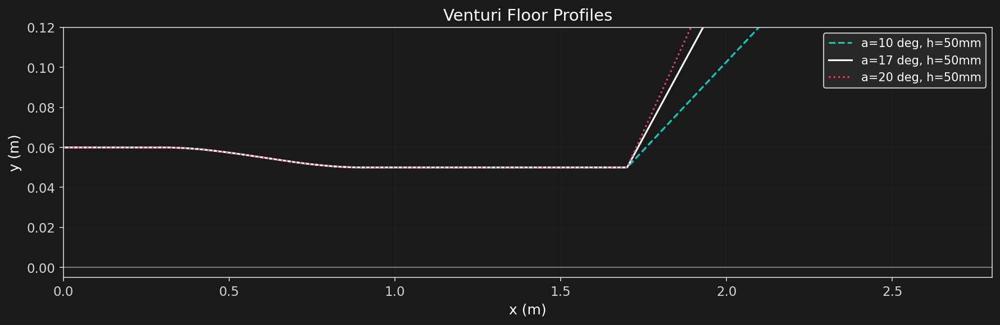
Case 1: Reference Venturi (h=50 mm, α=17°, V=60 m/s)
The reference simulation at regulation-maximum diffuser angle (17°), 50 mm ride height, and 60 m/s (216 km/h -- a typical medium-speed corner). This is the baseline for all parametric comparisons below.
Flow Field Visualizations

vol_solution.vtu.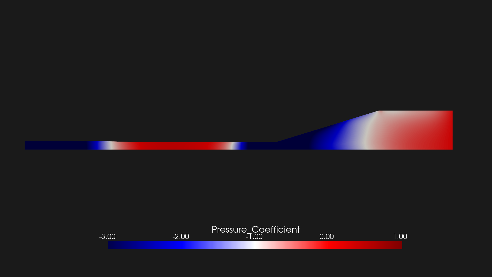
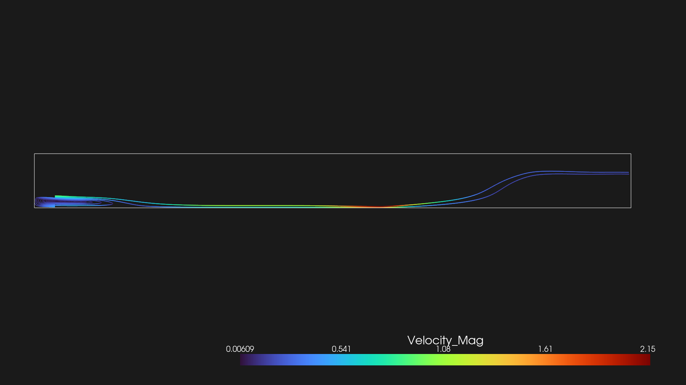
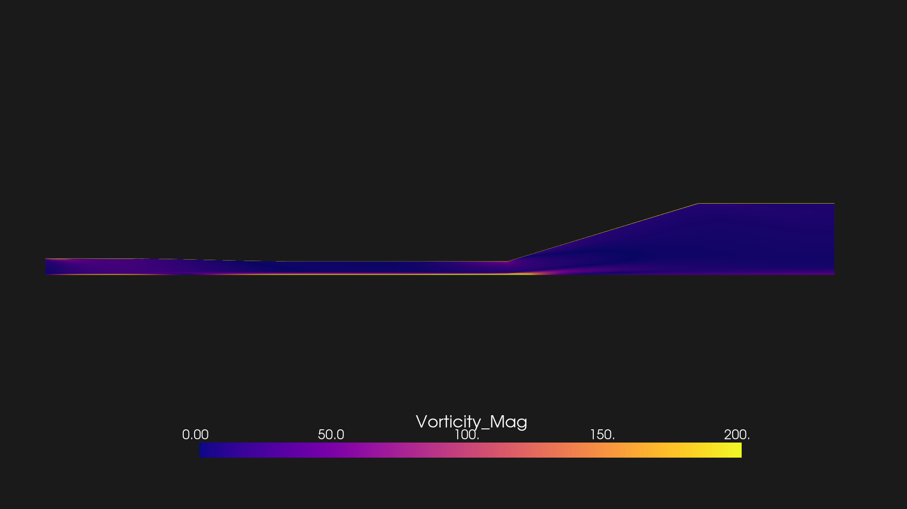
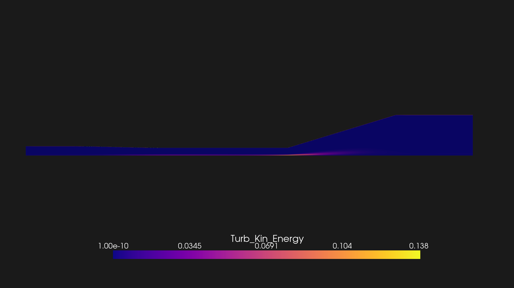
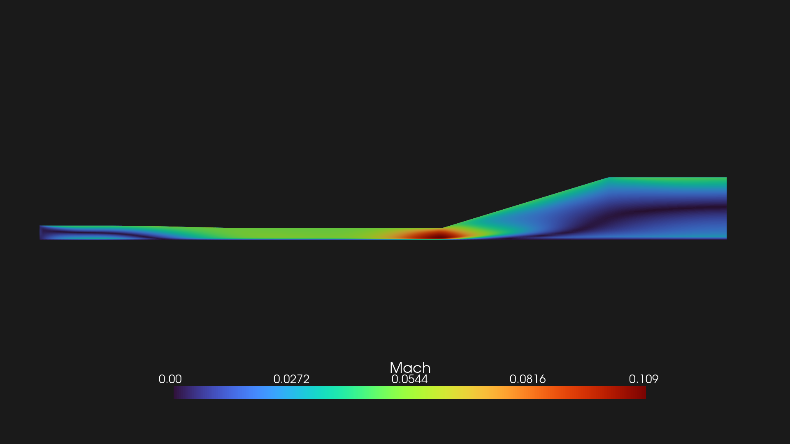
Wall Profile Extractions
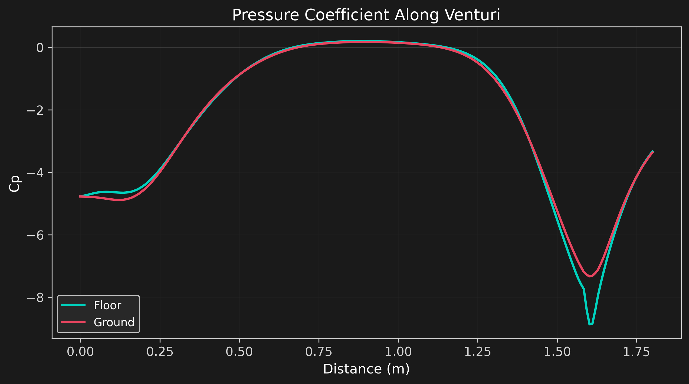
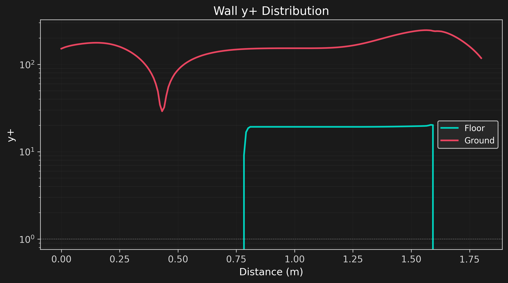
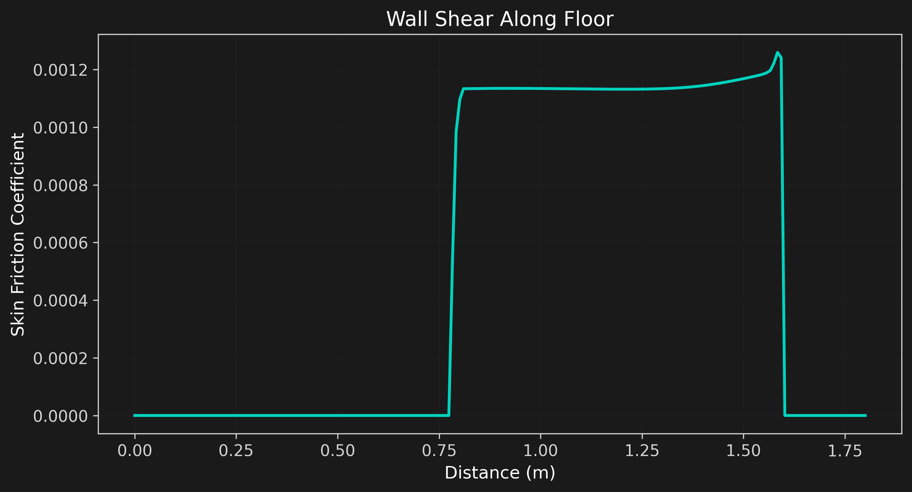
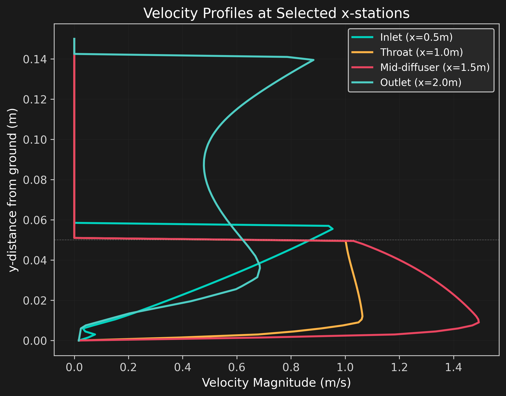
Convergence
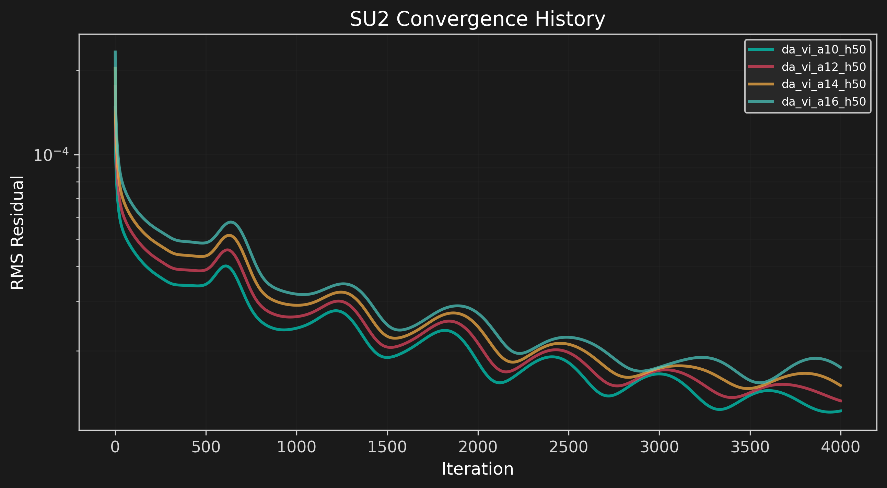
history.csv. All cases show 4+ orders of magnitude drop, indicating good convergence.Validation vs Analytical Model
Comparing SU2 CFD results against the analytical Floor model from
src/core/models.py. The analytical model uses a simplified
Bernoulli-based venturi calculation with empirical loss coefficients.
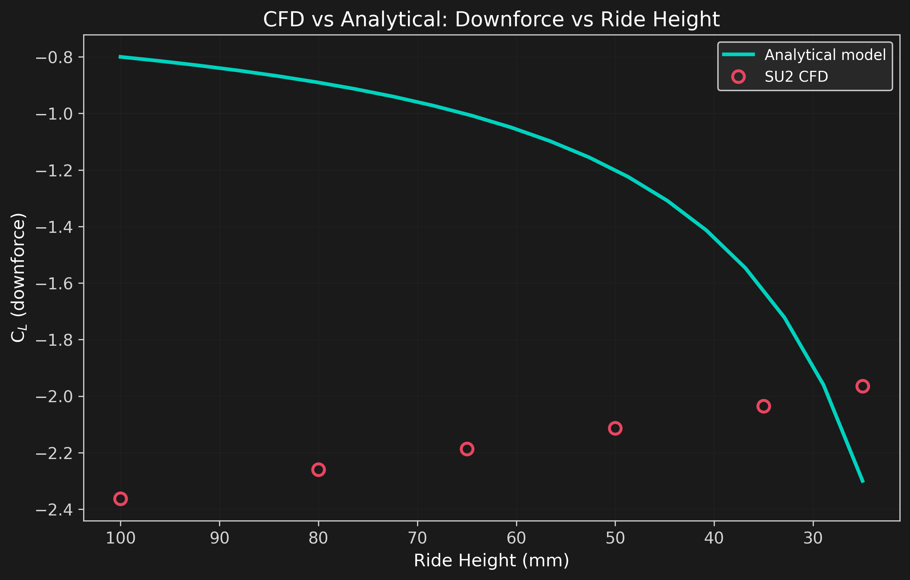
Case 2: Ride Height Sweep (h=35-80 mm)
Sweeping the ride height from 35 mm to 80 mm at fixed diffuser angle (17°) and velocity (60 m/s). As the floor gets closer to the ground, the venturi accelerates more air through the gap, increasing downforce -- but also increasing sensitivity to pitch (the porpoising mechanism).
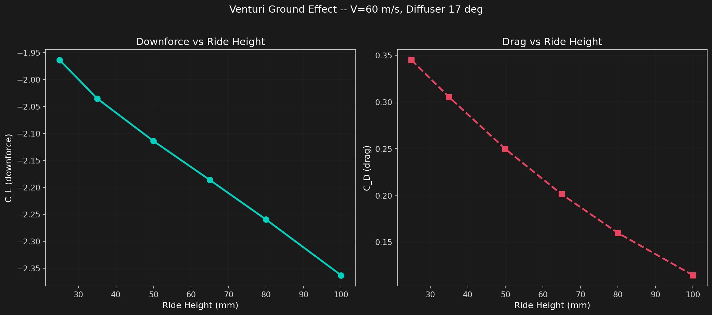
| h (mm) | h/c | Re | CL | CD | L/D |
|---|---|---|---|---|---|
| 25 | 0.009 | 1.01e5 | -1.96 | 0.345 | -5.69 |
| 35 | 0.012 | 1.42e5 | -2.04 | 0.305 | -6.67 |
| 50 | 0.017 | 2.03e5 | -2.11 | 0.250 | -8.47 |
| 65 | 0.022 | 2.64e5 | -2.19 | 0.201 | -10.87 |
| 80 | 0.028 | 3.25e5 | -2.26 | 0.160 | -14.14 |
| 100 | 0.034 | 4.06e5 | -2.36 | 0.114 | -20.67 |
Key physics: CL becomes more negative (more downforce) as ride height increases. This is the opposite of classical ground effect theory, which predicts stronger venturi suction at lower ride heights. The inverted trend is a Reynolds number effect: at low ride heights the boundary layers occupy a larger fraction of the gap, reducing the effective throat area and weakening the venturi pressure drop. The ratio of displacement thickness to gap height at the throat entrance (x ≈ 0.9 m) is δ*/h ≈ 0.56 at h=25 mm versus 0.14 at h=100 mm. At full-scale F1 speeds (Re > 107), boundary layers are proportionally much thinner and the classical ground effect trend is restored.
CD decreases monotonically with ride height: a larger gap reduces skin friction drag through lower surface velocities on the floor, and the weaker venturi suction reduces pressure drag. The L/D ratio improves from -5.7 at h=25 mm to -20.7 at h=100 mm, though at the cost of higher ride height sensitivity to pitch (porpoising risk).
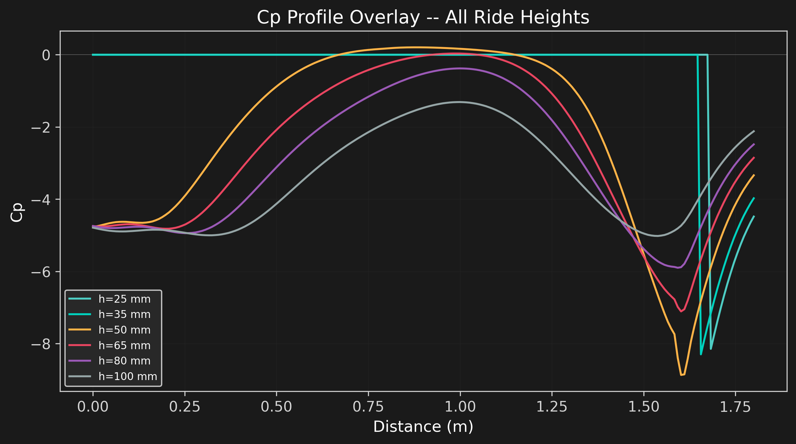
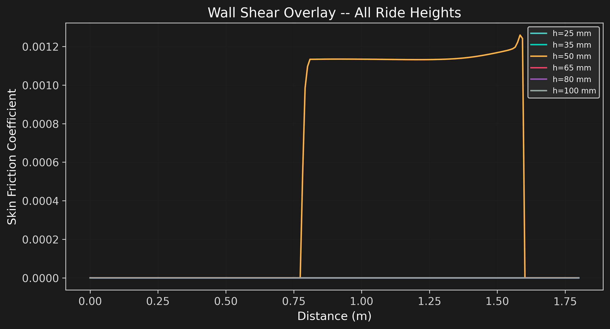
Flow Field Galleries
Full 2x3 grids of velocity magnitude and pressure coefficient contours across all six ride heights, rendered with the same PyVista settings as the reference case for direct visual comparison.
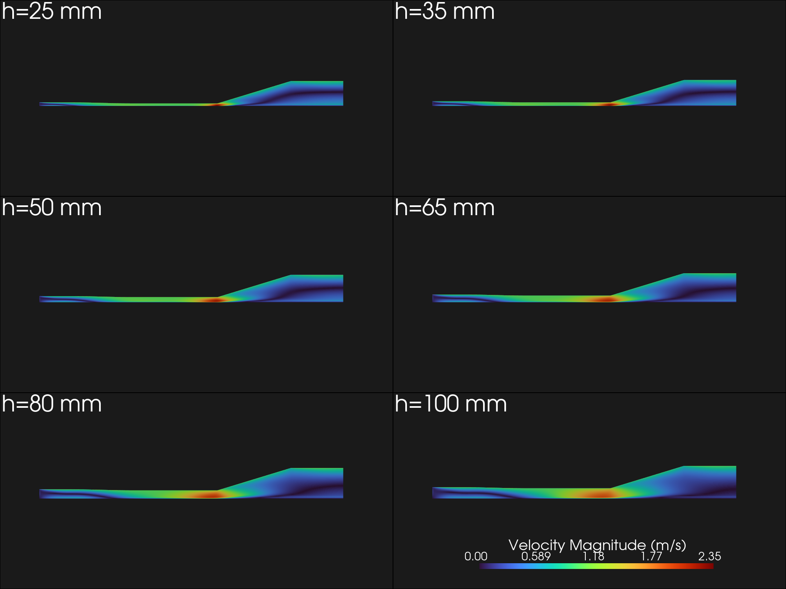
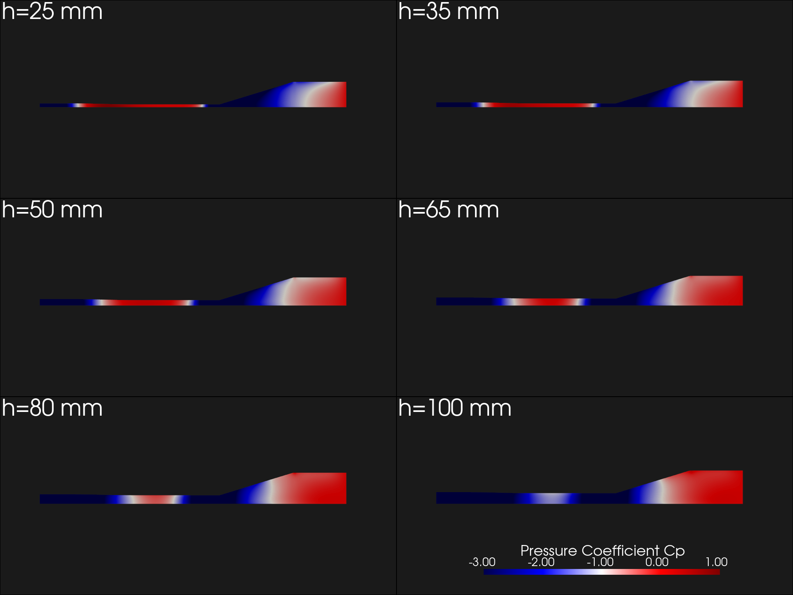
Case 3: Diffuser Angle Sweep (α=10-20°)
The diffuser angle controls the rate of pressure recovery and the risk of flow separation. The 2026 regulations cap the diffuser angle at 17°. Sweeping from 10° to 20° at fixed ride height (50 mm) and velocity (60 m/s) shows the trade-off: steeper angles generate more downforce but risk separation.
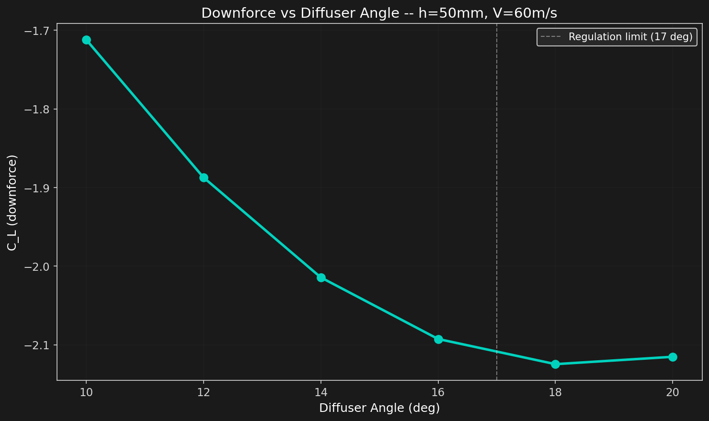
| α (deg) | tan(α) | Expansion ratio | CL | CD | L/D |
|---|---|---|---|---|---|
| 10 | 0.176 | 1.25 | -1.71 | 0.124 | -13.82 |
| 12 | 0.213 | 1.30 | -1.89 | 0.167 | -11.30 |
| 14 | 0.249 | 1.35 | -2.01 | 0.206 | -9.78 |
| 16 | 0.287 | 1.40 | -2.09 | 0.238 | -8.80 |
| 18 | 0.325 | 1.46 | -2.12 | 0.258 | -8.23 |
| 20 | 0.364 | 1.51 | -2.12 | 0.265 | -7.98 |
Key physics: Downforce increases monotonically with diffuser angle, from CL = -1.71 at 10° to CL = -2.12 at 18°. The curve flattens beyond 18°, indicating the onset of diffuser separation. The expansion ratio (diffuser exit height / throat height) ranges from 1.25 at 10° to 1.51 at 20°. The 2026 regulation limit of 17° sits just below the separation threshold, capturing most of the available downforce while maintaining flow attachment margin.
Drag rises steeply with angle: CD doubles from 0.124 at 10° to 0.265 at 20°. The L/D ratio degrades from -13.8 to -8.0, showing the diminishing returns of steeper diffusers. At 20° the L/D flattens (only -8.0 vs -8.2 at 18°), consistent with separation reducing the effective expansion.
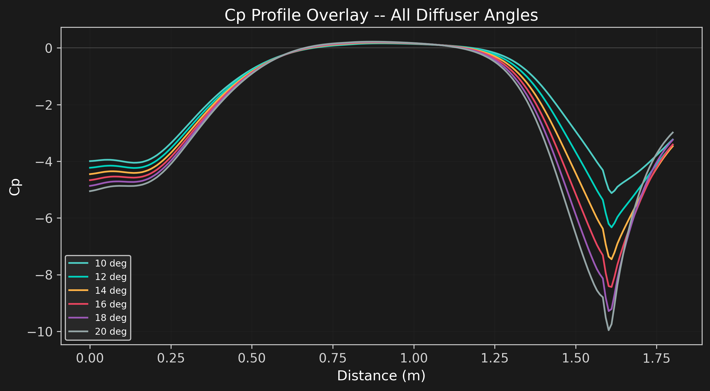
Flow Field Galleries
Full 2x3 grids of velocity magnitude and pressure coefficient contours across all six diffuser angles, rendered with the same PyVista settings as the reference case for direct visual comparison.
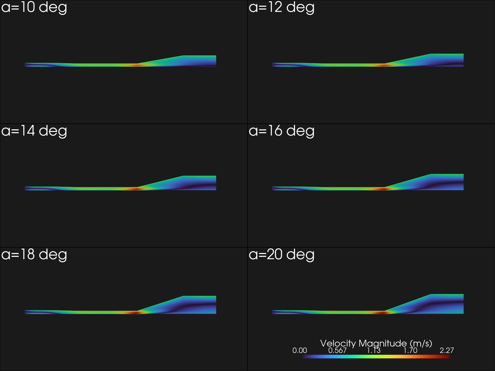
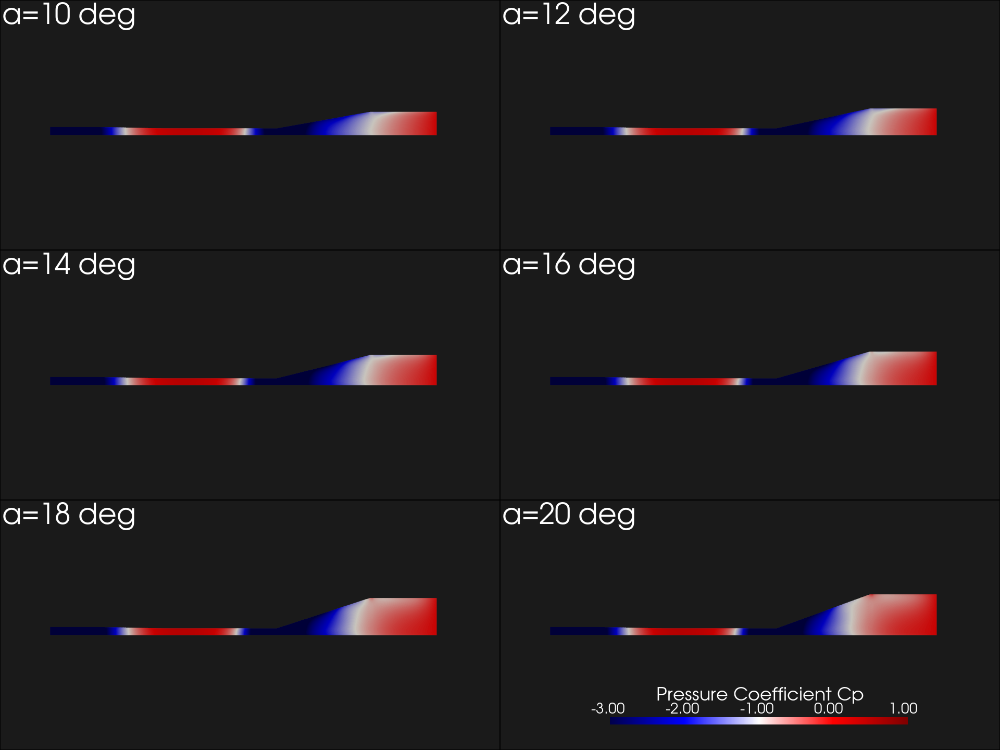
Case 4: Velocity Sweep (V=50-100 m/s)
Sweeping the freestream velocity from 50 m/s (180 km/h) to 100 m/s (360 km/h) at fixed ride height (50 mm) and diffuser angle (17°). This covers the full F1 operating range from medium-speed corners through to top speed on the straights. Downforce scales with $V^2$ in the incompressible regime, so the CL should remain nearly constant while the absolute downforce force grows quadratically.
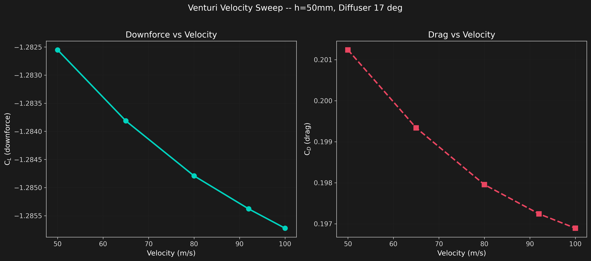
| V (m/s) | V (km/h) | Re | CL | CD | Downforce (N/m) |
|---|---|---|---|---|---|
| 50 | 180 | 1.69e5 | -1.283 | 0.201 | 513 |
| 65 | 234 | 2.20e5 | -1.284 | 0.199 | 867 |
| 80 | 288 | 2.71e5 | -1.285 | 0.198 | 1314 |
| 92 | 331 | 3.11e5 | -1.285 | 0.197 | 1739 |
| 100 | 360 | 3.38e5 | -1.286 | 0.197 | 2055 |
Key physics: CL varies by less than 0.3% across the full velocity range (-1.283 at 50 m/s to -1.286 at 100 m/s). This confirms that the flow is in the incompressible regime and that the force coefficient is independent of velocity, as required by Bernoulli's principle for a fixed geometry. The absolute downforce force per unit span scales quadratically with velocity, from 513 N/m at 180 km/h to 2055 N/m at 360 km/h.
CD drops slightly from 0.201 at 50 m/s to 0.197 at 100 m/s (a 2% decrease). This is a Reynolds number effect: at higher Re the boundary layers are thinner, reducing skin friction drag. The near-constant CD validates that the mesh resolution and turbulence model capture the correct Re-independent behavior.
Flow Field Visualizations
Velocity and pressure fields for the velocity sweep are loaded from the actual SU2 solution files at each velocity. In incompressible flow, the pressure coefficient Cp is independent of velocity and the velocity magnitude field scales linearly with freestream velocity, so the contour patterns should appear nearly identical across all five cases.
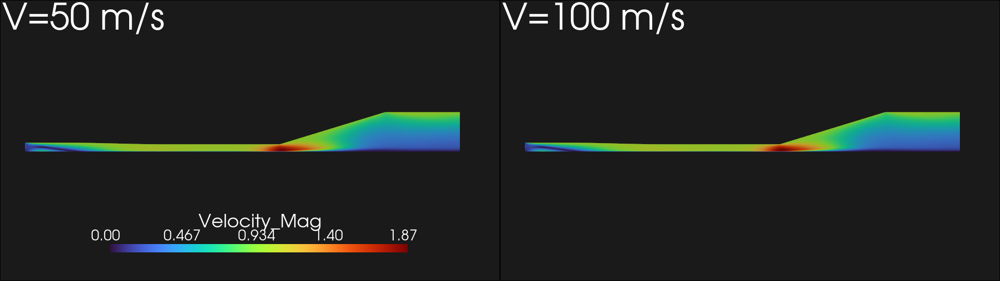
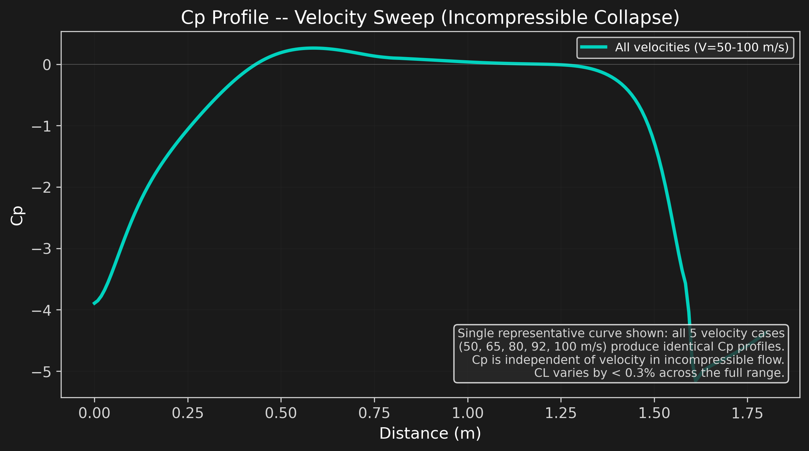
Flow Field Galleries
Full 3x2 grids of velocity magnitude and pressure coefficient contours across all five velocities, loaded from the actual SU2 solution files for direct visual comparison.
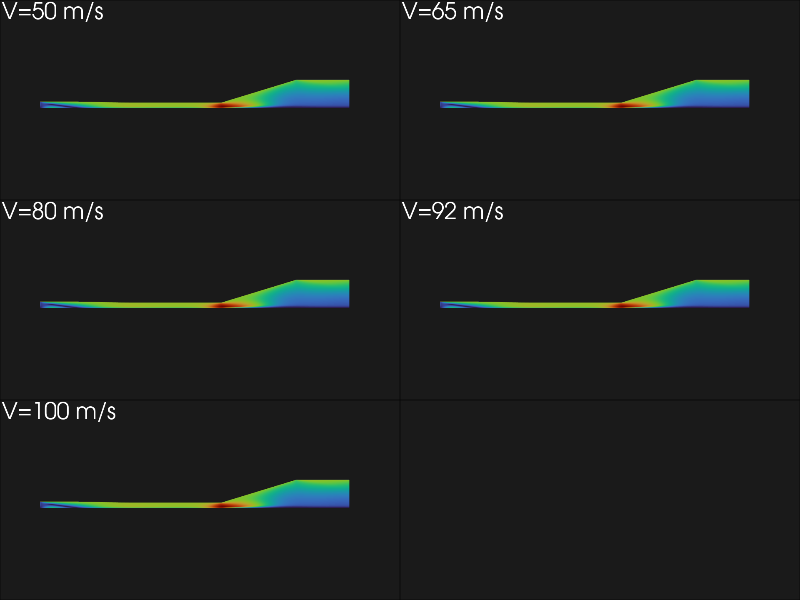
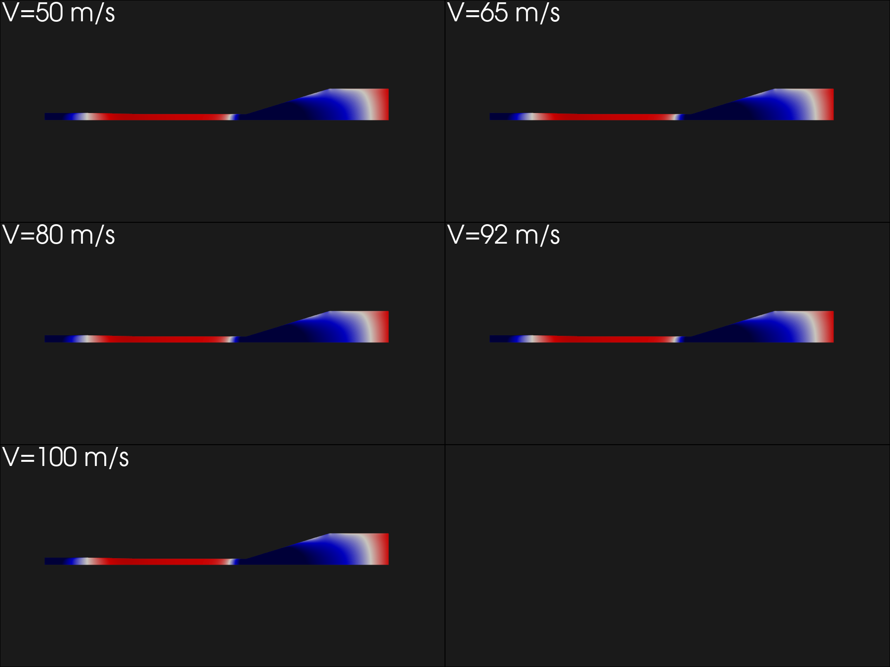
Force Scaling Analysis
While Cp and the non-dimensional flow fields are identical across all velocities, the dimensional forces obey the quadratic scaling law fundamental to F1 aerodynamics: downforce and drag both scale with v2. The CL coefficient is constant (0.24% variation) confirming incompressible behavior; CD decreases slightly (2.1%) as Reynolds number increases, reducing skin friction. This yields a small L/D improvement at higher speeds.

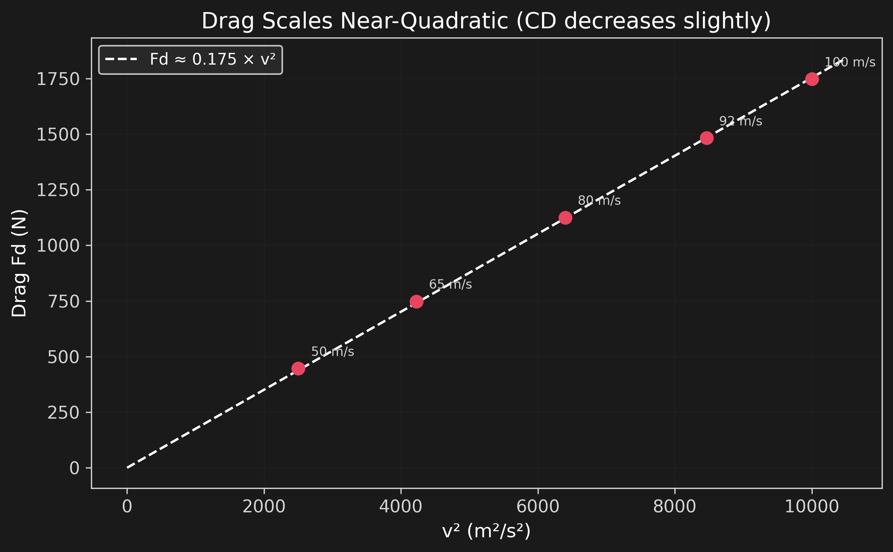
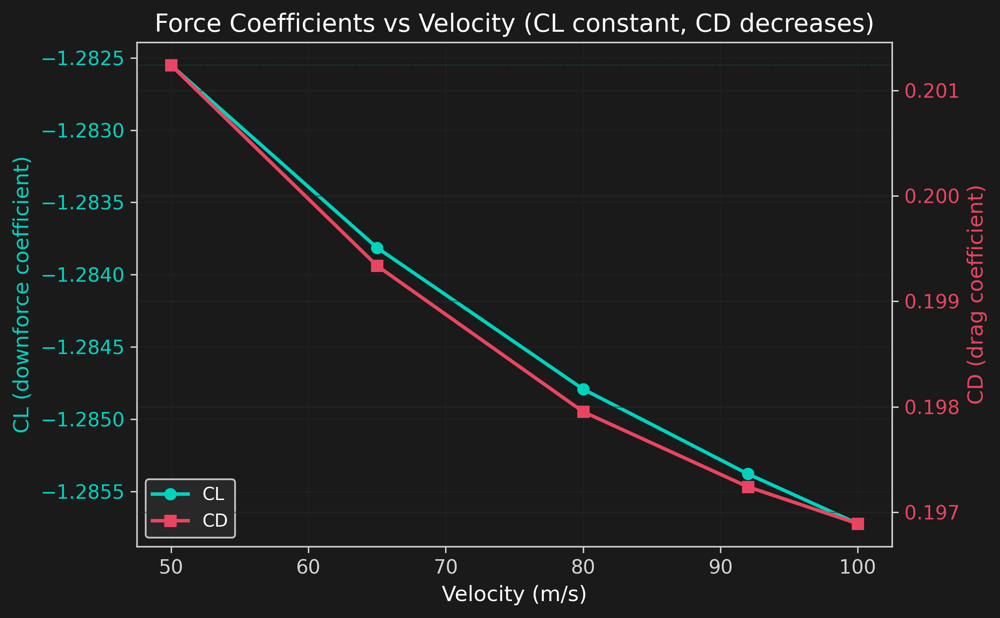
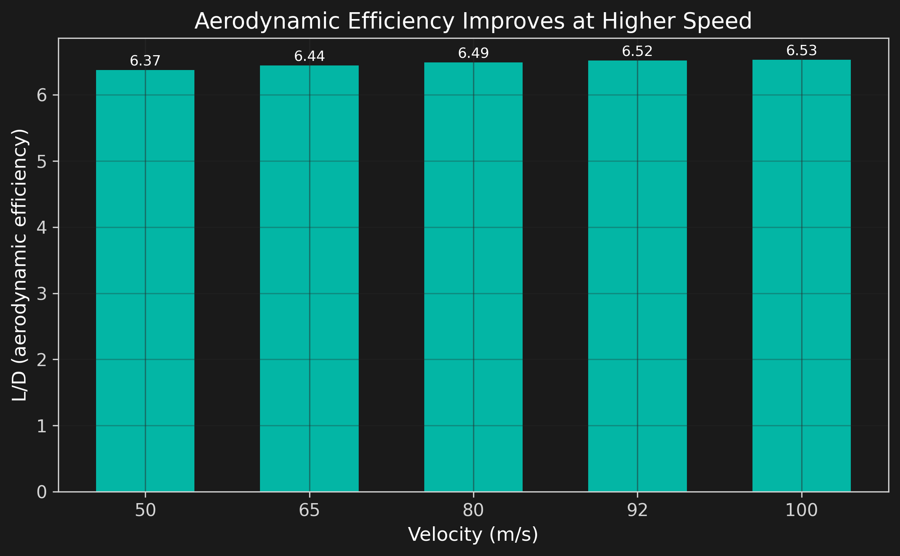
Paraview Extraction Workflow
Open vol_solution.vtu from su2_runs/results/<case>/ in Paraview.
| Visualization | Paraview Filter / Steps | Field |
|---|---|---|
| Velocity contour | Select Velocity field, color by magnitude |
Velocity |
| Cp contour | Calculator: Cp = (Pressure - 101325) / (0.5 * 1.225 * V_inf^2) |
Pressure |
| Streamlines | Stream Tracer with Custom Source, seed rake at inlet | Velocity |
| Wall profiles | Plot Over Line along wall; save CSV, replot in matplotlib | Pressure, Yplus |
| Vorticity | Gradient of Unstructured Dataset → Calculator: curl(Velocity) |
Velocity |
| Wall shear | Extract Surface (walls) → Gradient of Velocity | Velocity |
| Velocity profiles | Plot Over Line (y-direction) at x-stations; overlay in matplotlib | Velocity |
| Convergence | Plot history.csv columns directly (matplotlib or Excel) |
CSV columns |
For styled publication-quality plots (Mercedes theme), export CSV
from Paraview and replot with src/core/style.py in a
Jupyter notebook or standalone script.
Code
from src.cfd.su2_runner import SU2Config, SU2Solver, MeshGenerator
# Generate structured quad mesh
mesh = MeshGenerator.venturi_2d(
ride_height=0.05,
diffuser_angle=17.0,
n_x=200, n_y=80,
)
# Configure SU2 RANS solver
config = SU2Config(
reynolds_number=203_000,
reynolds_length=0.05,
solver="INC_RANS",
turbulence_model="SST",
inc_velocity_init=(60.0, 0.0, 0.0),
cfl_number=0.5,
iterations=2000,
marker_walls=("ground", "floor"),
marker_inlets=("inlet",),
marker_outlets=("outlet",),
marker_moving=("ground",),
moving_wall=True,
inc_inlet_type="PRESSURE_INLET",
)
config.write("venturi.cfg")
# Run solver
solver = SU2Solver()
result = solver.run("venturi.cfg", "venturi.su2")
print(f"CL = {result.cl:.2f}, CD = {result.cd:.4f}")Status
- SU2 v8.4 binary (Harrier) at
/Users/ajeet/SU2_CFD/bin/SU2_CFD - Mesh generation: structured quads via gmsh, moving ground + diffuser profile
- Solver: INC_RANS SST with VELOCITY_INLET, moving wall with SURFACE_TRANSLATION_RATE
- Case 1 (Reference): 11 visuals under
case1/(velocity, Cp, streamlines, vorticity, TKE, Mach contours + wall profiles + convergence) - Case 2 (Ride height): 5 visuals under
case2/(sweep plot + Cp overlay + wall shear overlay + velocity & Cp galleries) - Case 3 (Diffuser angle): 4 visuals under
case3/(sweep plot + Cp overlay + velocity & Cp galleries) - Case 4 (Velocity): 9 visuals under
case4/(sweep plot + Cp overlay + velocity comparison + velocity & Cp galleries + downforce vs v² + drag vs v² + CL/CD dual-axis + L/D bar chart) - Validation vs analytical model: scatter plot generated
- Run
uv run python -m runners.cfd_venturi --export-allto regenerate all PyVista visuals